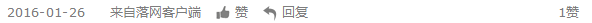

把青春唱完：我们一起经历了中国摇滚的叛逆期
言之・补梦人的狂想摇滚・2016-01-14
高原曾说，二十岁时的自己，不曾感到迷惘，而她的迷茫是从四十岁开始。当她想好了新书的名字，随即与好友分享时，一友人立刻回复，他还在青春期里。 这样的对话，不禁让我想起了北野武《坏孩子的天空》影片结尾，新志与小马的对话：小马，我们完了吗？傻瓜，我们还没开始呢。时间绕了一圈，人们又回到了原点。
摇滚乐在89年之后成为新时期最重要的文化现象、精神现象与社会现象。从八十年代到九十年代，摇滚乐的发生、发展脉络构成了新时期的精神史、社会文化史不可或缺的一个侧面。 可是在普通大众眼里，摇滚乐却被视为洪水猛兽，鲜少有人在这一文化发生，发展的初期做有意识的记录，以至于关于那段中国摇滚乐黄金时期的任何资料，都显得弥足珍贵。而摄影师高 原在无意识的情况下，用手中的相机记录了她曾遇到的人和经历的事。这些关于个人的光影记忆，成为了一个时代的缩影。高原做了一件了不起的事情。
翻开摄影师高原的新书《把青春唱完》，惊喜便接踵而至。一个被时代遗忘的光影宝盒在我眼前打开，熟悉与不熟悉的被摄影对象，此刻都成了鲜活的人物，在脑海中不断搜寻关于他们的记忆影像与音乐故事。
摇滚明星也是平凡人
以往能见到的零星中国早期摇滚音乐人照片多是现场演出的照片以及一些发行唱片时用的宣传照片，私底下的生活照，几乎很难找到。翻开高原新书《把青春唱完》的第一个惊喜就是， 能看到那些在舞台上一呼百应的摇滚歌手，在日常生活中自由轻松的影像。
在北戴河游泳与电影学院踢球的窦唯，在康西草原游玩的眼镜蛇乐队，搭火车巡回演出的黑豹，MV拍摄现场的何勇，排练间隙看报纸的张楚，北京地坛公园玩耍的左小祖咒……，在高原的摄影镜头下， 他们没有日后的明星光环，没有因出名而摆出的高姿态，他们只是一群怀揣着梦想的非普通人而已。他们的哂笑怒骂，他们的喜怒哀乐没有掩饰，也不需要掩饰。
高原的拍摄动机是善良有爱的，所以那些凝视镜头的眼睛才显得那么真诚与纯洁，不做作。摄影机就是无形的武器，当你将他对着陌生人时，留下的影像会是恐惧与愤怒、不信任，如果将它对着你所熟悉的人物时， 你看事物的视角——真诚与博爱，将会打动镜头下的每一位被摄人物。
前北京歌德学院的院长阿克曼在《地铺、笑话、很多的笑话恋曲80和90摇滚》一文中是这样评价高原的：高原和她的摄影对象几乎没有距离，这是职业摄影师一般不会被允许进入的范围。拍摄距离这么接近， 表达这么直接，使得这些作品具备了跟当时的摇滚乐一样的特质。我意外地发现，这些照片跟纪录欧美六、七十年代摇滚乐手生活的照片非常相似。
摄影是爱好胜于工作
据说是因为她父亲的原因，她比很多同龄人更早地接触、熟悉相机并开始拍摄。很快，她拍摄的照片就出现在很多演出海报、CD封套和杂志上。那段时间里，高原随身携带着父亲送她的那台相机，摄影成为了她生活 中最重要的一部分。
在寻常的日子里，她在各个熟悉的乐队和朋友身边走动。那些日常性的乐队排练，朋友们聚会，演出的间隙，她随手拿起相机，对准他们按动快门。更多时候，拍摄对她来说是一件很随机的事情，一个特殊的表情， 一个有意思的场景，或是某一道特别的光影，都会触动她按下快门，记录瞬间。
高原拥有时间最长的身份是摄影师，从入行到现在已经20多年。但她的摄影师身份，以及迄今为止数量惊人的摄影作品，并没有被大多数人充分认识到。当这本书付梓之时，高原曾发出这样的感慨，“在回忆中庆幸 自己是个记录者，珍贵的片段和影像，因为那个爱过恨过的我，跃然眼前的时候，碰撞心灵与悲喜交织的滋味，告诉自己还活着，并且鲜活的活过！”
镜头下的人物与时代
第六代导演王小帅在《把青春唱完》的序言里曾写道，“越来越多的经验让我们体会到，历经多年的陈年旧像，它的无比珍贵就是来自时间，每一张都是曾经生命的一个定格，除了这一定格，一切都已经回不去了。”
人们总是一厢情愿地说那是一段充满阳光、自由和诗意的年代。新兴的摇滚乐，独立纪录片，中国第六代电影导演，行为艺术，文学上的新诗运动，美术上的“星星画展”，一个时代正在悄然发生变化。正如崔健所说： 我们一无所有！如何改变这种一无所有的境况？人们如饥似渴地接触文化与艺术，希望通过它们来摆脱外界的束缚，我填满内心的空虚。
高原的镜头里，记录了那个曾经狂野不羁的年代，一群曾经扰乱过无数人内心的凶猛动物，能以影像的方式，集体性地保存在这段充满诗意的历史中。更重要的是，我们在这些珍贵的影像资料中，看到的只是一群普通的艺术家，而不是炫酷的摇滚明星。
任何一个时代都需要记录者，正如独立纪录片组织CNEX的口号：为下一个太平盛世做备忘录。没有这些记录者，历史会存在断层，理解会存在偏差。感谢那些曾经为摇滚乐或是某一特殊群体留下影像，照片和文字的记录者。人们常说，中国第六代导演是 跟中国当代艺术与文化走得最近的一代导演，的确如此。张元的《北京杂种》、管虎的《头发乱了》、路学长的《长大成人》、张扬的《昨天》等，以及独立纪录片导演吴文光的《流浪北京》、张扬的《后革命时代》和香港导演张婉婷的《北京的乐与路》， 他们用影像记录、还原了一个时代的音乐图景。作家汪继芳在《20世纪最后的浪漫——北京自由艺术家生活实录》一书中，对这群新兴的艺术家给予了高度的关注，独立摄影师邢丹文也用镜头捕捉了这群边缘艺术家的生存状态。
期待能早日看到高原即将出版的新书《高原：自在生长》，也期望她以自己的方式，继续记录这个快速发展的时代；我也翘首期盼超载乐队主唱高旗曾经的那些乐队采访能够集结出版，更期待他的华丽复出。
本文图片均为高原《把青春唱完》中的摄影作品，版权归属：Lens


文章作者 |

|
版权声明 |
|

|
补梦人的狂想摇滚 情癡 情呆 行怪 言狂 冥頑 |
「落网」专栏内文章，未经作者及「落网」许 可，不得转载、摘编。一经发现，自行承担全 部法律责任。 谢谢合作。 |
|
评论·679
最新评论
宇宙垃圾，to be happy people,or to be nice
从这本书开始了解摇滚
